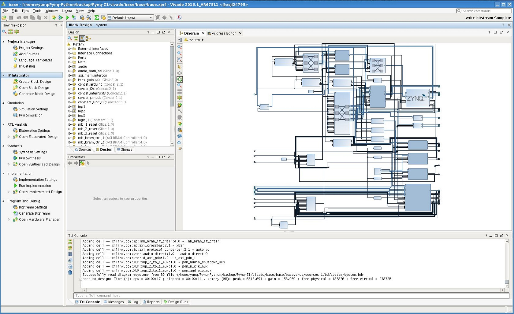

Creating Overlays¶
Table of Contents
Introduction¶
As described in the PYNQ introduction, overlays are analogous to software libraries. A programmer can download overlays into the Zynq® PL at runtime to provide functionality required by the software application.
An Overlay is a class of Programmable Logic design. Programmable Logic designs are usually highly optimized for a specific task. Overlays however, are designed to be configurable, and reusable for broad set of applications. A PYNQ overlay will have a Python interface, allowing a software programmer to use it like any other Python package.
A programmer can use an overlay, but will not usually create the overlays, as this is a specialised task for a hardware designer.
This section will give an overview of the process of creating an overlay and integrating it into PYNQ, but will not cover the hardware design process in detail.
Vivado design¶
An overlay consists of two main parts; the Programmable Logic (PL) design, and the Python API.
Xilinx® Vivado software is used to create the PL design. This will generate a bitstream or binary file (.bit file) that is used to program the Zynq PL.
The free webpack version of Vivado can be used with the PYNQ-Z1 board to create overlays. https://www.xilinx.com/products/design-tools/vivado/vivado-webpack.html
There are some differences between the standard Zynq design process, and designing overlays for PYNQ. A Vivado project for a Zynq design consists of two parts; the PL design, and the PS configuration settings. The PS configuration includes settings for system clocks, including the clocks used in the PL.
The PYNQ image which is used to boot the board configures the Zynq PS at boot time. Overlays are downloaded as required by the programmer, and will not reconfigure the Zynq PS. This means that overlay designers should ensure the PS settings in their Vivado project match the PYNQ image settings.
The following settings should be used for a new Vivado overlay project:
Vivado Project settings:
- Target device: xc7z020clg400-1
PL clock configuration:
- FCLK_CLK0: 100.00MHz
- FCLK_CLK1: 142.86MHz
- FCLK_CLK2: 200.00MHz
- FCLK_CLK3: 166.67MHz
The PYNQ-Z1 Master XDC (I/O constraints) are available at the Digilent PYNQ-Z1 resource site: https://reference.digilentinc.com/reference/programmable-logic/pynq-z1/start
It is recommended to start with an existing overlay design to ensure the PS settings are correct. The source files for the base overlay can be found in the pynq GitHub, and the project can be rebuilt using the makefile available here:
<GitHub repository>/Pynq-Z1/vivado/base
Block Diagram Tcl¶
The tcl for the Vivado block diagram should also be exported with the bitstream. This allows information about the overlay to be parsed into Python (e.g. list of IPs in the overlay). See the next section for details on how to query the tcl file.
You can use a custom tcl file to build your project, or block diagram, but custom tcl files may not be parsed correctly. You should use Vivado to export the tcl for the block diagram. This should ensure it can be parsed correctly in Python.
To generate the tcl for the Block Diagram from the Vivado GUI:
- Click File > Export > Block Design
Or, run the following in the tcl console:
write_bd_tcl
The tcl filename should match the .bit filename. E.g. my_overlay.bit and my_overlay.tcl
The tcl is parsed when the overlay is instantiated (not when it is downloaded).
from pynq import Overlay
ol = Overlay("base.bit") # tcl is parsed here
An error will be displayed if a tcl is not available when attempting to download an overlay, or if the tcl filename does not match the .bit file name.
ip_dict¶
The Overlay package generates a dictionary called ip_dict containing the names of IP in a specific overlay (e.g. base.bit). The dictionary can be used to reference an IP by name in your Python code, rather than by a hard coded address. It can also check the IP available in an overlay.
To show the IP dictionary of the overlay, run the following:
from pynq import Overlay
OL = Overlay("base.bit")
OL.ip_dict
Each entry in this IP dictionary that is returned is a key-value pair.
E.g.:
'SEG_mb_bram_ctrl_1_Mem0': ['0x40000000', '0x10000', None]
Note, this parses the tcl file that was exported with the bitstream. It does not do check the overlay currently running in the PL.
The key of the entry is the IP instance name; all the IP instance names are parsed from the *.tcl file (e.g. base.tcl) in the address segment section. The value of the entry is a list of 3 items:
- The first item shows the base address of the addressable IP (hex).
- The second item shows the address range in bytes (hex).
- The third item records the state associated with the IP. It is None by default, but can be user defined.
Similarly, the PL package can be used to find the addressable IPs currently in the programmable logic:
from pynq import PL
PL.ip_dict
Existing Overlays¶
The base overlay is included in the Pynq repository and can be found here:
<GitHub repository>/Pynq-Z1/vivado/base
A makefile exists in each folder that can be used to rebuild the Vivado project and generate the bitstream for the overlay. The bitstream and tcl for the overlay are available on the board (base.bit is loaded by default when the board boots), and in the project repository:
<GitHub Repository>/Pynq-Z1/bitstream/
Vivado must be installed to design and build overlays. Building an existing overlay design allows the project to be opened in Vivado and examined, or modified to create a new overlay.
{kind=link}
Interfacing to an overlay¶
MMIO¶
PYNQ includes the MMIO Python class to simplify communication between the Zynq PS and PL. Once the overlay has been created, and the memory map is known, the MMIO can be used to access memory mapped locations in the PL.
The Python code for the MMIO can be viewed here:
<GitHub Repository>/python/pynq/mmio.py
The MMIO class can access an area of memory in the PL by specifying the start address, and the range. E.g. The following code allows access to memory mapped locations in the PL from 0x40000000 to 0x40010000 (SEG_mb_bram_ctrl_1_Mem0):
from pynq import MMIO
# an IP is located at 0x40000000
myip = MMIO(0x40000000,0x10000)
# Read from the IP at offset 0
myip.read(0)
In the example above, any accesses outside the address range 0x10000 (65535 bytes) will cause an exception in the MMIO package. The designer must also be careful to ensure that addresses accessed by the MMIO have something mapped in the PL. Remember that custom peripherals exist in the address space, and even if and address range is mapped by the MMIO, there may not be anything connected to specific addresses, or they may be read only or write only. Invalid accesses to the PL will cause system errors and will likely crash a Jupyter kernel.
When creating the python driver for a new hardware function, the MMIO can be wrapped inside a Python module.
Zynq GPIOs¶
GPIO between the Zynq PS and PL can be used by Python code as a control interface to overlays. The information about a GPIO is kept in the GPIO dictionary of an overlay, similar to the ip_dict discussed above.
The following code can be used to get the dictionary for a bitstream:
from pynq import Overlay
ol = Overlay("base.bit")
ol.gpio_dict
A GPIO dictionary entry is a key, value pair, where value is a list of two items. An example of the entry in a GPIO dictionary:
'mb_1_reset/Din': [0, None]
The key is the GPIO instance name (mb_1_reset/Din). GPIO instance names are read and parsed from the Vivado *.tcl file (e.g. base.tcl).
The value is a list of 2 items:
- The first item shows the index of the GPIO (0).
- The second item (None) shows the state of the GPIO. It is None by default, but can be user defined.
The following code can be used to get the dictionary for GPIO currently in the FPGA fabric:
from pynq import PL
pl = PL
pl.gpio_dict
CFFI¶
CFFI (C Foreign Function Interface) provides a simple way to interface with C code from Python. The CFFI package is preinstalled in the PYNQ image. It supports an inline ABI (Application Binary Interface) compatibility mode, which allows you to dynamically load and run functions from executable modules, and an API mode, which allows you to build C extension modules.
The following example taken from http://docs.python-guide.org/en/latest/scenarios/clibs/ shows the ABI inline mode, calling the C function strlen() in from Python
C function prototype:
size_t strlen(const char*);
The C function prototype is passed to cdef(), and can be called using clib.
from cffi import FFI
ffi = FFI()
ffi.cdef("size_t strlen(const char*);")
clib = ffi.dlopen(None)
length = clib.strlen(b"String to be evaluated.")
print("{}".format(length))
C functions inside a shared library can be called from Python using the C Foreign Function Interface (CFFI). The shared library can be compiled online using the CFFI from Python, or it can be compiled offline.
For more information on CFFI and shared libraries refer to:
http://cffi.readthedocs.io/en/latest/overview.html
http://www.tldp.org/HOWTO/Program-Library-HOWTO/shared-libraries.html
To see examples in PYNQ on how to use CFFI, refer to the CMA class or the Audio class, both located:
<GitHub Repository>/pynq/drivers
Packaging overlays¶
An overlay, tcl, and Python can be placed anywhere in the filesystem, but this is not good practice.
The default location for the base PYNQ overlay and tcl is :
<GitHub Repository>/Pynq-Z1/bitstream
The PYNQ Python can be found here:
<GitHub Repository>/python/pynq
You can fork PYNQ from github, and add Python code to the PYNQ package. However, for custom overlays, you can create your own repository and package it to allow other users to install your overlay using pip.
There are different ways to package a project for installation with pip. One example is provided below.
See pip install for more details, and more packaging options. https://pip.pypa.io/en/stable/reference/pip_install
Example¶
The following example assume an overlay that exists in the root of a GitHub repository.
Assume the repository has the following structure:
- notebook/
- new_overlay.ipynb
- new_overlay/
- new_overlay.bit
- new_overlay.tcl
- __init.py
- new_overlay.py
readme.md
license
Add a setup.py to the root of your repository. This file will imports the necessary packages, and specifies some setup instructions for your package including the package name, version, url, and files to include.
Example setup.py :
from setuptools import setup, find_packages
import subprocess
import sys
import shutil
import new_overlay
setup(
name = "new_overlay",
version = new_overlay.__version__,
url = 'https://github.com/your_github/new_overlay',
license = 'All rights reserved.',
author = "Your Name",
author_email = "your@email.com",
packages = ['new_overlay'],
package_data = {
'' : ['*.bit','*.tcl','*.py','*.so'],
},
description = "New custom overlay for PYNQ-Z1"
)
package_data specifies which files will be installed as part of the package.
From a terminal, the new package can be installed by running:
sudo pip install --upgrade 'git+https://github.com/your_github/new_overlay'
Using Overlays¶
The PL can be dynamically reconfigured with new overlays as the system is running.
Loading overlays can be done in Python using the Overlay class:
<GitHub Repository>/python/pynq/pl.py
The bitstream can then be downloaded from Python:
from pynq import Overlay
ol = Overlay("base.bit")
ol.download()